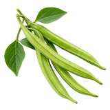

होम / ग्वार फली

ग्वार फली का भाव आज | Cluster Beans Mandi Price Today
ग्वार फली के आज के उपलब्ध मंडी भाव देखें—जालौर और शाहाबाद के मॉडल, न्यूनतम और अधिकतम रेट और प्रति किलो भाव।
नीचे मंडी-वार सूची में ग्वार फली के उपलब्ध भाव दिए हैं। मंडी के नाम पर क्लिक करके उस मंडी की दूसरी फसलों के भाव भी देख सकते हैं।
ग्वार फली के मंडी भाव को प्रभावित करने वाले कारक
राम राम किसान भाइयों! भारतीय सब्जी मंडियों में ग्वार फली (Cluster Beans) एक ऐसी नकदी हरी सब्जी है, जो कम लागत और कम पानी में किसानों को तुरंत नकद मुनाफा देती है। राजस्थान (जोधपुर, सीकर, जयपुर, नागौर, बीकानेर), हरियाणा और गुजरात के किसानों के लिए ग्वार फली केवल पारंपरिक आहार नहीं, बल्कि सब्जी मंडियों में रोज की नकद कमाई का सबसे मजबूत जरिया है। अपनी सेहतमंद खूबियों, उच्च फाइबर और मधुमेह (शुगर) रोगियों के लिए उत्तम आहार होने के कारण शहरों के खुदरा बाजारों, होटलों और कैटरिंग कारोबार में हरी ग्वार फली की मांग सालभर लगातार बनी रहती है। यही कारण है कि किसान भाई और स्थानीय व्यापारी रोजाना यह जानने के लिए सक्रिय रहते हैं कि आज सब्जी मंडी में ग्वार फली कितने रुपए किलो है, प्रमुख मंडियों में ग्वार फली का ताजा रेट क्या चल रहा है और आने वाले दिनों में बाजार का रुख कैसा रहेगा।
ग्वार फली (हरी सब्जी) बनाम ग्वार दाना (गम उद्योग): किसानों के मन का भ्रम
अक्सर किसान भाई और इंटरनेट पर सर्च करने वाले लोग 'हरी ग्वार फली' और 'सूखे ग्वार दाने' के बाजार में अंतर को लेकर भ्रमित हो जाते हैं। दोनों के खरीदार, मंडियां और भाव तय होने के नियम पूरी तरह अलग हैं:
- हरी ग्वार फली (सब्जी मंडी व्यापार): यह कच्ची, कोमल और मुलायम फली होती है, जिसे पौधों से तोड़कर सीधे फल-सब्जी मंडियों (जैसे जयपुर मुहाना मंडी, जोधपुर भदवासिया मंडी या सीकर सब्जी मंडी) में दैनिक बोली पर बेचा जाता है। इसका भाव प्रति किलो या प्लास्टिक क्रेट के हिसाब से प्रतिदिन तय होता है।
- सूखा ग्वार दाना (अनाज मंडी व गम उद्योग): यह फसल को खेत में पूरा पकाने और सुखाने के बाद थ्रेशर से निकाला गया दाना होता है, जिसकी बिक्री अनाज मंडियों में प्रति क्विंटल होती है। इसका उपयोग ग्वार गम (Guar Gum) बनाने, पेट्रोलियम शेल गैस ड्रिलिंग और पशु आहार (ग्वार कोरमा/चूरी) के लिए होता है।
- "ग्वार का भाव 30000 कब आएगा" और 2026 का सच: साल 2012 में अमेरिकी शेल गैस बूम के दौरान सूखे ग्वार दाने का भाव सट्टेबाजी और अचानक आई वैश्विक मांग से ₹30,000 प्रति क्विंटल तक उछल गया था। आज भी किसान भाई अक्सर पूछते हैं कि ग्वार का भाव 30,000 कब आएगा या ग्वार का भाव कब बढ़ेगा 2026 में। हकीकत यह है कि अंतरराष्ट्रीय गम बाजार अब काफी स्थिर और रासायनिक विकल्पों पर आधारित हो चुका है। इसलिए सूखे दाने के किसी अवास्तविक सट्टे की उम्मीद में बैठने के बजाय, अगेती हरी ग्वार फली को सब्जी मंडी में बेचना किसानों को प्रति एकड़ कम समय में कहीं ज्यादा ठोस और सुरक्षित नकद मुनाफा दे जाता है।
किस्मों का गणित: देशी ग्वार फली बनाम हाइब्रिड फली का मंडी भाव
सब्जी मंडी में आढ़ती और थोक खरीदार फली के छिलके, कोमलता और बीजों के उभार के आधार पर प्रीमियम तय करते हैं:
- देशी ग्वार फली (पूसा नवबहार, पूसा सदाबहार, दुर्गापुरा सफेद): देशी किस्म की ग्वार फली पतली, चमकीली हरी, अत्यधिक मुलायम और बिना रेशे (Stringless) वाली होती है। पकाने में जल्दी गलने और बेहतरीन स्वाद के कारण गृहणियों और शहर के खुदरा खरीदारों की यह पहली पसंद होती है। सब्जी मंडी में देशी फली का भाव हमेशा हाइब्रिड से ₹15 से ₹30 प्रति किलो तक ऊंचा बिकता है।
- हाइब्रिड / मोटी फली वाली किस्में: इन फलियों का उत्पादन अधिक होता है और छिलका थोड़ा मोटा होता है। इनमें वजन ज्यादा बैठता है और ये 2 से 3 दिनों तक मुरझाती नहीं हैं। दूर-दराज की मंडियों में ट्रक भेजने वाले व्यापारी हाइब्रिड फली को अधिक पसंद करते हैं, हालांकि खुदरा बाजार में इसका भाव देशी से थोड़ा कम रहता है।
- कड़ी व दानेदार फली पर कटौती: अगर फली में दाना पक गया हो और तोड़ने पर धागा (रेशा) निकलता हो, तो व्यापारी उसे 'कड़क/बासी माल' घोषित कर देते हैं। ऐसी फली का भाव सीधे 50% से 60% तक कट जाता है।
राजस्थान की बेंचमार्क मंडियां: कहाँ से तय होता है ग्वार फली का रेट?
राजस्थान देश में ग्वार का सबसे बड़ा उत्पादक राज्य है, और यहाँ की सब्जी मंडियों के भाव पूरे उत्तर भारत के बाजार को प्रभावित करते हैं:
- जोधपुर मंडी (मंडोर / भदवासिया कृषि मंडी): मारवाड़ क्षेत्र का सबसे बड़ा व्यापारिक केंद्र होने के नाते जोधपुर मंडी में स्थानीय बाड़मेर, फलौदी, नागौर और जोधपुर ग्रामीण से बड़ी आवक होती है। पश्चिमी राजस्थान के दैनिक बाजार भाव की दिशा तय करने में जोधपुर मंडी की भूमिका सबसे अहम रहती है।
- सीकर मंडी (शेखावाटी बेल्ट): Gwar ka Bhav Today सीकर राजस्थान सर्च करने वाले किसान भाइयों के लिए सीकर, नीमकाथाना और चौमूं बेल्ट सब्जी उत्पादन का बड़ा गढ़ है। सीकर से दिल्ली आजादपुर मंडी और हरियाणा की मंडियों के लिए सीधी पिकअप गाड़ियां निकलती हैं, जिससे यहाँ का थोक भाव प्रतिस्पर्धी बना रहता है।
- जयपुर मुहाना मंडी: प्रदेश की सबसे बड़ी थोक फल-सब्जी मंडी होने के नाते मुहाना मंडी में राजस्थान के हर जिले के अलावा बाहरी राज्यों का माल भी आता है। यहाँ बनने वाला औसत मॉडल रेट अन्य सभी छोटी मंडियों का आधार बनता है।
ग्वार फली का मौसमी चक्र: कब मिलता है सबसे ऊंचा भाव?
ग्वार फली के भाव में साल के अलग-अलग महीनों में भारी उतार-चढ़ाव देखा जाता है:
- ग्रीष्मकालीन अगेती उछाल (अप्रैल से जून): यह ग्वार फली उत्पादक किसानों के लिए सबसे ज्यादा कमाई का समय होता है। भीषण गर्मी में जब अन्य हरी सब्जियों (जैसे भिंडी, तोरई, लौकी) की आवक कम होने लगती है, तब जायद (गर्मी) की अगेती ग्वार फली बाजार में उतरती है। इस दौरान थोक मंडियों में भाव ₹50 से ₹80 प्रति किलो और खुदरा में ₹100 प्रति किलो के पार पहुंच जाते हैं।
- मानसून और खरीफ की सामान्य आवक (अगस्त से अक्टूबर): बारिश के सीजन में बारानी (बिना सिंचाई वाले) खेतों में बड़े पैमाने पर ग्वार की प्राकृतिक फसल तैयार होती है। इस समय मंडियों में माल की भारी आवक होने से थोक भाव ₹15 से ₹25 प्रति किलो के सामान्य दायरे में आ जाते हैं।
- दीवाली और सहालग का समय (अक्टूबर अंत से दिसंबर): शादियों के सीजन में कैटरिंग और हलवाइयों द्वारा ग्वार फली व ढोकली के पारंपरिक व्यंजनों की मांग बढ़ने से बाजार में उठाव दोबारा मजबूत हो जाता है।
थोक मंडी भाव और 1 किलो खुदरा रेट में अंतर की वजह
उपभोक्ता और नए किसान अक्सर पूछते हैं कि मंडी में ग्वार फली ₹20 से ₹25 किलो बिकी, लेकिन शहर की दुकानों और ठेलों पर 1 किलो ग्वार फली का दाम ₹50 से ₹60 क्यों चल रहा है? इसके पीछे 3 व्यावहारिक कारण हैं:
- नमी सूखने से वजन का घटना: ग्वार फली तोड़े जाने के बाद तेजी से नमी छोड़ती है। 24 घंटे के भीतर 1 बोरी या क्रेट में 1 से 1.5 किलो वजन प्राकृतिक रूप से घट जाता है।
- छंटाई और वेस्टेज: फुटकर व्यापारी जब 20 किलो की बोरी खाली करता है, तो उसमें 2 से 3 किलो कड़ी, काली पड़ी या डंठल टूटी फलियां निकलती हैं जिन्हें छांटकर फेंकना पड़ता है।
- लोकल ट्रांसपोर्ट और मजदूरी: मुख्य थोक मंडी से शहर के अलग-अलग मोहल्लों तक लाने का टेम्पो भाड़ा, पल्लेदारी और दुकानदार का जोखिम मार्जिन जुड़ने से खुदरा रेट बढ़ जाता है।
मंडी में ग्वार फली का सबसे ऊंचा भाव पाने के 4 व्यावहारिक टिप्स
- सख्त तुड़ाई चक्र (3 से 4 दिन का अंतराल): पौधे पर फली को कभी भी ज्यादा दिन न छोड़ें। हर तीसरे या चौथे दिन कोमल अवस्था में ही तुड़ाई कर लें। बीज उभरने से पहले तोड़ी गई फली ही मंडी में 'सुपर क्वालिटी' की बोली दिलाती है।
- ओस सूखने के बाद या शाम को तुड़ाई: सुबह के समय खेत में भारी ओस होने पर फली न तोड़ें। गीली फलियों को बोरी में पैक करने से अंदर गर्मी बनती है, जिससे फलियों की सतह पर काले दाग पड़ जाते हैं। दोपहर बाद या शाम को सूखी फली तोड़ना सबसे सुरक्षित रहता है।
- हवादार जालीदार बोरियां (Net Mesh Bags) या क्रेट्स: ग्वार फली को कभी भी खाद या सीमेंट के प्लास्टिक कट्टों में न दबाएं। जालीदार लाल-हरी बोरियों या प्लास्टिक कैरट में पैक करने से हवा का संचार बना रहता है और फली 48 घंटे तक ताजी और चमकदार दिखती है।
- समान छंटाई (Grading): कच्ची-मुलायम फलियों को अलग रखें और गलती से टूटी हुई कड़ी या बड़ी फलियों को अलग लॉट में बेचें। दोनों को मिलाने पर व्यापारी पूरी ढेरी को कड़े माल के भाव पर तौलता है।
हरी ग्वार फली का बाजार पूरी तरह फलियों की ताजगी, कोमलता और सही समय पर की गई तुड़ाई पर निर्भर करता है। प्रमुख उत्पादक मंडियों के दैनिक मॉडल भाव और बाजार के रुख को समझकर बिक्री करने से किसान भाई कम समय में अपनी उपज का सर्वाधिक मुनाफा हासिल कर सकते हैं।
अक्सर पूछे जाने वाले सवाल
ग्वार फली का दूसरा नाम क्या है?
ग्वार फली को Cluster Beans और Guar Bean भी कहा जाता है। यह ग्वार के पौधे पर लगती है। इसी फली के अंदर का दाना ग्वार है। इससे सब्जी बनाई जाती है। देशी ग्वार की फलियों को बाद में सब्जी बनाने के लिए सुखाकर भी रखा जाता है।
ग्वार की फली खाने के क्या फायदे हैं?
ग्वार की फली में रेशा, कैल्शियम और आयरन होता है। यह पाचन, शुगर और हड्डियों के लिए अच्छी है।
ग्वार की फली कौन से महीने में बोई जाती है?
ग्वार की बुवाई गर्मी और बरसात के मौसम में होती है। उत्तर भारत में इसे जून से जुलाई में बोया जाता है, और गर्मी की फसल के लिए फरवरी से मार्च में भी बो सकते हैं।